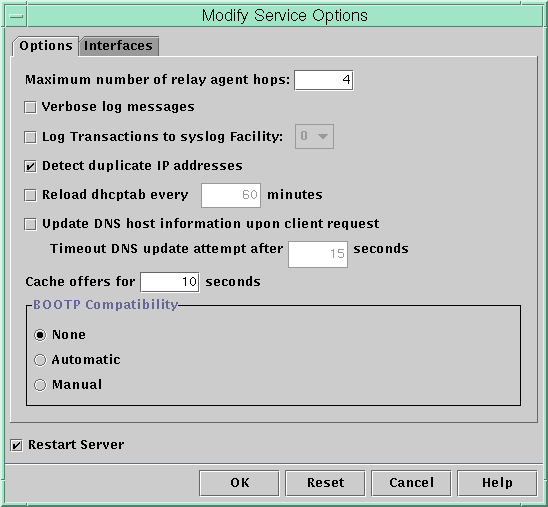

Document Information
Preface
Part I TCP/IP Administration
1. Solaris TCPIP Protocol Suite (Overview)
2. Planning an IPv4 Addressing Scheme (Tasks
3. Planning an IPv6 Addressing Scheme (Overview)
4. Planning an IPv6 Network (Tasks)
5. Configuring TCP/IP Network Services and IPv4 Addressing (Tasks)
6. Administering Network Interfaces (Tasks)
7. Enabling IPv6 on a Network (Tasks)
8. Administering a TCP/IP Network (Tasks)
9. Troubleshooting Network Problems (Tasks)
10. TCP/IP and IPv4 in Depth (Reference)
11. IPv6 in Depth (Reference)
Part II DHCP
12. About Solaris DHCP (Overview)
13. Planning for DHCP Service (Tasks)
14. Configuring the DHCP Service (Tasks)
15. Administering DHCP (Tasks)
About DHCP Manager
How to Start and Stop DHCP Manager
Setting Up User Access to DHCP Commands
How to Grant Users Access to DHCP Commands
Starting and Stopping the DHCP Service
How to Start and Stop the DHCP Service (DHCP Manager)
How to Enable and Disable the DHCP Service (DHCP Manager)
How to Enable and Disable the DHCP Service (dhcpconfig -S)
DHCP Service and the Service Management Facility
Adding, Modifying, and Removing DHCP Networks (Task Map)
How to Specify Network Interfaces for DHCP Monitoring (DHCP Manager)
How to Specify Network Interfaces for DHCP Monitoring (dhcpconfig)
How to Add a DHCP Network (DHCP Manager)
How to Add a DHCP Network (dhcpconfig)
How to Modify the Configuration of a DHCP Network (DHCP Manager)
How to Modify the Configuration of a DHCP Network (dhtadm)
How to Remove a DHCP Network (DHCP Manager)
How to Remove a DHCP Network (pntadm)
Supporting BOOTP Clients With the DHCP Service (Task Map)
How to Set Up Support of Any BOOTP Client (DHCP Manager)
How to Set Up Support of Registered BOOTP Clients (DHCP Manager)
Working With IP Addresses in the DHCP Service (Task Map)
How to Add a Single IP Address (DHCP Manager)
How to Duplicate an Existing IP Address (DHCP Manager)
How to Add Multiple IP Addresses (DHCP Manager)
How to Add IP Addresses (pntadm)
How to Modify IP Address Properties (DHCP Manager)
How to Modify IP Address Properties (pntadm)
How to Mark IP Addresses as Unusable (DHCP Manager)
How to Mark IP Addresses as Unusable (pntadm)
How to Delete IP Addresses From DHCP Service (DHCP Manager)
How to Delete IP Addresses From the DHCP Service (pntadm)
How to Assign a Consistent IP Address to a DHCP Client (DHCP Manager)
How to Assign a Consistent IP Address to a DHCP Client (pntadm)
Working With DHCP Macros (Task Map)
How to View Macros Defined on a DHCP Server (DHCP Manager)
How to View Macros Defined on a DHCP Server (dhtadm)
How to Change Values for Options in a DHCP Macro (DHCP Manager)
How to Change Values for Options in a DHCP Macro (dhtadm)
How to Add Options to a DHCP Macro (DHCP Manager)
How to Add Options to a DHCP Macro (dhtadm)
How to Delete Options From a DHCP Macro (DHCP Manager)
How to Delete Options From a DHCP Macro (dhtadm)
How to Create a DHCP Macro (DHCP Manager)
How to Create a DHCP Macro (dhtadm)
How to Delete a DHCP Macro (DHCP Manager)
How to Delete a DHCP Macro (dhtadm)
Working With DHCP Options (Task Map)
How to Create DHCP Options (DHCP Manager)
How to Create DHCP Options (dhtadm)
How to Modify DHCP Option Properties (DHCP Manager)
How to Modify DHCP Option Properties (dhtadm)
How to Delete DHCP Options (DHCP Manager)
How to Delete DHCP Options (dhtadm)
Supporting Solaris Network Installation With the DHCP Service
Supporting Remote Boot and Diskless Boot Clients (Task Map)
Setting Up DHCP Clients to Receive Information Only (Task Map)
Converting to a New DHCP Data Store
How to Convert the DHCP Data Store (DHCP Manager)
How to Convert the DHCP Data Store (dhcpconfig -C)
Moving Configuration Data Between DHCP Servers (Task Map)
How to Export Data From a DHCP Server (DHCP Manager)
How to Export Data From a DHCP Server (dhcpconfig -X)
How to Import Data on a DHCP Server (DHCP Manager)
How to Import Data on a DHCP Server (dhcpconfig -I)
How to Modify Imported DHCP Data (DHCP Manager)
How to Modify Imported DHCP Data (pntadm, dhtadm)
16. Configuring and Administering DHCP Clients
17. Troubleshooting DHCP (Reference)
18. DHCP Commands and Files (Reference)
Part III IP Security
19. IP Security Architecture (Overview)
20. Configuring IPsec (Tasks)
21. IP Security Architecture (Reference)
22. Internet Key Exchange (Overview)
23. Configuring IKE (Tasks)
24. Internet Key Exchange (Reference)
25. Solaris IP Filter (Overview)
26. Solaris IP Filter (Tasks)
Part IV Mobile IP
27. Mobile IP (Overview)
28. Administering Mobile IP (Tasks)
29. Mobile IP Files and Commands (Reference)
Part V IPMP
30. Introducing IPMP (Overview)
31. Administering IPMP (Tasks)
Part VI IP Quality of Service (IPQoS)
32. Introducing IPQoS (Overview)
33. Planning for an IPQoS-Enabled Network (Tasks)
34. Creating the IPQoS Configuration File (Tasks)
35. Starting and Maintaining IPQoS (Tasks)
36. Using Flow Accounting and Statistics Gathering (Tasks)
37. IPQoS in Detail (Reference)
Glossary
Index
|
Modifying DHCP Service Options (Task Map)
You can change values for some additional features of the DHCP service, which
might not have been offered during the initial configuration with DHCP Manager. To
change service options, you can use the Modify Service Options dialog box in
DHCP Manager. Or you can specify options with the dhcpconfig command. The following task map shows the tasks related to service options and the
procedures to use. The following figure shows DHCP Manager's Modify Service Options dialog box. Figure 15-3 Modify Service Options Dialog Box in DHCP Manager
Changing DHCP Logging Options
The DHCP service can log DHCP service messages and DHCP transactions to syslog.
See the syslogd(1M) and syslog.conf(4) man pages for more information about syslog. DHCP service messages logged to syslog include the following:
Error messages, which notify you of conditions that prevent the DHCP service from fulfilling a request by a client or by you. Warnings and notices, which notify you of conditions that are abnormal, but do not prevent the DHCP service from fulfilling a request.
You can increase the amount of information that is reported by using the
verbose option for the DHCP daemon. Verbose message output can help you troubleshoot
DHCP problems. See How to Generate Verbose DHCP Log Messages (DHCP Manager). Another useful troubleshooting technique is transaction logging. Transactions provide information about every interchange
between a DHCP server or BOOTP relay and clients. DHCP transactions include the
following message types:
ASSIGN – IP address assignment ACK – Server acknowledges that the client accepts the offered IP address, and sends configuration parameters EXTEND – Lease extension RELEASE – IP address release DECLINE – Client is declining address assignment INFORM – Client is requesting network configuration parameters but not an IP address NAK – Server does not acknowledge a client's request to use a previously used IP address ICMP_ECHO – Server detects potential IP address is already in use by another host
BOOTP relay transactions include the following message types:
DHCP transaction logging is disabled by default. When enabled, DHCP transaction logging uses
the local0 facility in syslog by default. DHCP transaction messages are generated
with a syslog severity level of notice. This security level causes DHCP transactions
to be logged to the file where other system notices are logged. However,
because the local facility is used, the DHCP transaction messages can be logged
separately from other notices. To log the transaction messages separately, you must edit
the syslog.conf file to specify a separate log file. See the syslog.conf(4)
man page for more information about the syslog.conf file. You can disable or enable transaction logging, and you can specify a different
syslog facility, from local0 through local7, as explained in How to Enable and Disable DHCP Transaction Logging (DHCP Manager). In the server
system's syslog.conf file, you can also instruct syslogd to store the DHCP
transaction messages in a separate file. See How to Log DHCP Transactions to a Separate syslog File for more information.
How to Generate Verbose DHCP Log Messages (DHCP Manager)
- In DHCP Manager, choose Modify from the Service menu.
See How to Start and Stop DHCP Manager for information about DHCP Manager. The Modify Service Options dialog box opens and displays the Options tab. See
Figure 15-3.
- Select Verbose Log Messages.
- Select Restart Server.
The Restart Server option is near the bottom of the dialog box.
- Click OK.
The daemon runs in verbose mode for this session and each subsequent session
until you reset this option. Verbose mode can reduce daemon efficiency because of
the time that is taken to display messages.
How to Generate Verbose DHCP Log Messages (Command Line)
- Become superuser or assume a role or user name that is assigned to
the DHCP Management profile.
For more information about the DHCP Management profile, see Setting Up User Access to DHCP Commands. Roles contain authorizations and privileged commands. For more information about roles, see Configuring RBAC (Task Map) in System Administration Guide: Security Services.
- Type the following command to set verbose mode:
# /usr/sbin/dhcpconfig -P VERBOSE=true The next time the DHCP server starts, the server runs in verbose
mode until you turn off verbose mode. To turn off verbose mode, type the following command: # /usr/sbin/dhcpconfig -P VERBOSE= This command sets the VERBOSE keyword to no value, which causes the keyword
to be removed from the server's configuration file. Verbose mode can reduce daemon efficiency because of the time that is taken
to display messages.
How to Enable and Disable DHCP Transaction Logging (DHCP Manager)This procedure enables and disables transaction logging for all subsequent DHCP server sessions.
- In DHCP Manager, choose Modify from the Service menu.
See How to Start and Stop DHCP Manager for information about DHCP Manager.
- Select Log Transactions to Syslog Facility.
To disable transaction logging, deselect this option.
- (Optional) Select a local facility from 0 to 7 to use for logging DHCP
transactions.
By default, DHCP transactions are logged to the location where system notices are logged,
which depends on how syslogd is configured. If you want the DHCP transactions
to be logged to a file separate from other system notices, see How to Log DHCP Transactions to a Separate syslog File. Message files can quickly become very large when transaction logging is enabled.
- Select Restart Server.
- Click OK.
The daemon logs transactions to the selected syslog facility for this session and each
subsequent session until you disable logging.
How to Enable and Disable DHCP Transaction Logging (Command Line)
- Become superuser or assume a role or user name that is assigned to
the DHCP Management profile.
For more information about the DHCP Management profile, see Setting Up User Access to DHCP Commands. Roles contain authorizations and privileged commands. For more information about roles, see Configuring RBAC (Task Map) in System Administration Guide: Security Services.
- Choose one of the following steps:
- To enable DHCP transaction logging, type the following command:
# /usr/sbin/dhcpconfig -P LOGGING_FACILITY=syslog-local-facility syslog-local-facility is a number from 0 through 7. If you omit this option,
0 is used. By default, DHCP transactions are logged to the location where system notices are
logged, which depends on how syslogd is configured. If you want the DHCP transactions
to be logged to a file separate from other system notices, see
How to Log DHCP Transactions to a Separate syslog File. Message files can quickly become very large when transaction logging is enabled.
- To disable DHCP transaction logging, type the following command:
# /usr/sbin/dhcpconfig -P LOGGING_FACILITY= Note that you supply no value for the parameter.
How to Log DHCP Transactions to a Separate syslog File
- Become superuser or assume an equivalent role on the DHCP server system.
Roles contain authorizations and privileged commands. For more information about roles, see Configuring RBAC (Task Map) in System Administration Guide: Security Services. A role that is assigned to the DHCP Management profile might not be
sufficient for this task. The role must have permission to edit syslog files.
- Edit the /etc/syslog.conf file on the server system to add a line of
the following format:
localn.notice path-to-logfile n is the syslog facility number you specified for transaction logging, and path-to-logfile
is the complete path to the file to use for logging transactions. For example, you might add the following line: local0.notice /var/log/dhcpsrvc See the syslog.conf(4) man page for more information about the syslog.conf file.
Enabling Dynamic DNS Updates by a DHCP Server
DNS provides name-to-address and address-to-name services for the Internet. Once a DNS mapping
is made, a system can be reached through its host name or its
IP address. The system is also reachable from outside its domain. The DHCP service can use DNS in two ways:
The DHCP server can look up the host name that is mapped to an IP address that the server is assigning to the client. The server then returns the client's host name along with the client's other configuration information. The DHCP server can attempt to make a DNS mapping on a client's behalf, if the DHCP server is configured to update DNS. The client can supply its own host name when requesting DHCP service. If configured to make DNS updates, the DHCP server attempts to update DNS with the client's suggested host name. If the DNS update is successful, the DHCP server returns the requested host name to the client. If the DNS update is not successful, the DHCP server returns a different host name to the client.
You can enable the DHCP service to update the DNS service for
DHCP clients that supply their own host names. For the DNS update feature
to work, the DNS server, the DHCP server, and the DHCP client must
be set up correctly. In addition, the requested host name must not be
in use by another system in the domain. The DHCP server's DNS update feature works if the following statements are true:
The DNS server supports RFC 2136. The DNS software is based on BIND v8.2.2, patch level 5 or later, whether on the DHCP server system or the DNS server system. The DNS server is configured to accept dynamic DNS updates from the DHCP server. The DHCP server is configured to make dynamic DNS updates. DNS support is configured for the DHCP client's network on the DHCP server. The DHCP client is configured to supply a requested host name in its DHCP request message. The requested host name corresponds to a DHCP-owned address. The host name could also have no corresponding address.
How to Enable Dynamic DNS Updating for DHCP Clients
Note - Be aware that dynamic DNS updates are a security risk. By default, the Solaris DNS daemon (in.named) does not allow dynamic updates. Authorization
for dynamic DNS updates is granted in the named.conf configuration file on the
DNS server system. No other security is provided. You must carefully weigh the
convenience of this facility for users against the security risk created when you
enable dynamic DNS updates.
- On the DNS server, edit the /etc/named.conf file as superuser.
- Find the zone section for the appropriate domain in the named.conf file.
- Add the DHCP server's IP addresses to the allow-update keyword.
If the allow-update keyword does not exist, insert the keyword. For example, if the DHCP server resides at addresses 10.0.0.1 and 10.0.0.2, a
named.conf file for the dhcp.domain.com zone should be modified as follows: zone "dhcp.domain.com" in {
type master;
file "db.dhcp";
allow-update { 10.0.0.1; 10.0.0.2; };
};
zone "10.IN-ADDR.ARPA" in {
type master;
file "db.10";
allow-update { 10.0.0.1; 10.0.0.2; };
}; Note that allow-update for both zones must be enabled to allow the DHCP
server to update both A and PTR records on the DNS server.
- On the DHCP server, start DHCP Manager.
# /usr/sadm/admin/bin/dhcpmgr & See How to Start and Stop DHCP Manager for more detailed information.
- Choose Modify from the Service menu.
The Modify Service Options dialog box opens.
- Select Update DNS Host Information Upon Client Request.
- Specify the number of seconds to wait for a response from the DNS
server before timing out, then click OK.
The default value of 15 seconds should be adequate. If you have
time out problems, you can increase the value later.
- Click the Macros tab, and ensure that the correct DNS domain is specified.
The DNSdmain option must be passed with the correct domain name to any
client that expects dynamic DNS update support. By default, DNSdmain is specified in the
server macro, which is used as the configuration macro bound to each
IP address.
- Set up the DHCP client to specify its host name when requesting DHCP
service.
If you use the Solaris DHCP client, see How to Enable a Solaris Client to Request a Specific Host Name. If your client is
not a Solaris DHCP client, see the documentation for your DHCP client for
information about how to specify a host name.
Client Host Name Registration
If you let the DHCP server generate host names for the IP
addresses that you place in the DHCP service, the DHCP server can register
those host names in NIS+, /etc/inet/hosts, or DNS name services. Host name registration cannot
be done in NIS because NIS does not provide a protocol to allow
programs to update and propagate NIS maps.
Note - The DHCP server can update DNS with generated host names only if the
DNS server and the DHCP server are running on the same system.
If a DHCP client provides its host name and the DNS server
is configured to allow dynamic updates from the DHCP server, the DHCP server
can update DNS on the client's behalf. Dynamic updates can be done even
if the DNS and DHCP servers are running on different systems. See Enabling Dynamic DNS Updates by a DHCP Server
for more information about enabling this feature. The following table summarizes client host name registration for DHCP client systems with
the various name services. Table 15-2 Client Host Name Registration in Name Services |
Who Registers Host Name |
|---|
Name Service |
DHCP-Generated Host Name |
DHCP Client-Supplied Host
Name |
|---|
NIS |
NIS Administrator |
NIS Administrator |
NIS+ |
DHCP tools |
DHCP tools |
/etc/hosts |
DHCP tools |
DHCP tools |
DNS |
DHCP tools, if the DNS server
runs on the same system as the DHCP server DNS Administrator, if the
DNS server runs on a different system |
DHCP server, if configured for dynamic
DNS updates DNS Administrator, if DHCP server is not configured for dynamic DNS updates |
Solaris DHCP clients can request particular host names in DHCP requests if configured
to do so as described in How to Enable a Solaris Client to Request a Specific Host Name. Refer to the vendor documentation for
other DHCP clients to determine if the capability is supported.
Customizing Performance Options for the DHCP Server
You can change options that affect the performance of the DHCP server. These
options are described in the following table. Table 15-3 Options Affecting DHCP Server PerformanceServer Option |
Description |
Keyword |
|---|
Maximum number of BOOTP relay
agent hops |
If a request has traveled through more than a given number
of BOOTP relay agents, the request is dropped. The default maximum number of relay
agent hops is four. This number is likely to be sufficient for
most networks. A network might need more than four hops if DHCP requests
pass through several BOOTP relay agents before reaching a DHCP server. |
RELAY_HOPS=integer |
Detect duplicate addresses |
By
default, the server pings an IP address before offering the address to a
client. A lack of response to the ping verifies that the address is
not already in use. You can disable this feature to decrease the
time that the server takes to make an offer. However, disabling the feature
creates the risk of having duplicate IP addresses in use. |
ICMP_VERIFY=TRUE/FALSE |
Reload dhcptab automatically at
specified intervals |
The server can be set to automatically read the dhcptab at the
interval, in minutes, that you specify. If your network configuration information does not
change frequently, and you do not have multiple DHCP servers, you do not
need to reload the dhcptab automatically. Also, note that DHCP Manager gives you
the option to have the server reload the dhcptab after you make a
change to the data. |
RESCAN_INTERVAL=min |
Cache offers of IP addresses for specified intervals |
After a
server offers an IP address to a client, the offer is cached. While
the offer is cached, the server does not offer the address again. You
can change the number of seconds for which the offer is cached.
The default is 10 seconds. On slow networks, you might need to increase
the offer time. |
OFFER_CACHE_TIMEOUT=sec |
The following procedures describe how to change these options.
How to Customize DHCP Performance Options (DHCP Manager)
- In DHCP Manager, choose Modify from the Service menu.
See How to Start and Stop DHCP Manager for information about DHCP Manager.
- Change the desired options.
See Table 15-3 for information about the options.
- Select Restart Server.
- Click OK.
How to Customize DHCP Performance Options (Command Line)If you change options with this procedure, the changed options are used only
after the DHCP server is restarted.
- Become superuser or assume a role or user name that is assigned to
the DHCP Management profile.
For more information about the DHCP Management profile, see Setting Up User Access to DHCP Commands. Roles contain authorizations and privileged commands. For more information about roles, see Configuring RBAC (Task Map) in System Administration Guide: Security Services.
- Modify one or more performance options:
# /usr/sbin/dhcpconfig -P keyword=value,keyword=value... keyword=value can be any of the following keywords: - RELAY_HOPS=integer
Specifies the maximum number of relay agent hops that can occur before the daemon drops the DHCP or BOOTP datagram. - ICMP_VERIFY=TRUE/FALSE
Enables or disables automatic duplicate IP address detection. Setting this keyword to FALSE is not recommended. - RESCAN_INTERVAL=minutes
Specifies the interval in minutes that the DHCP server should use to schedule the automatic rereading of the dhcptab information. - OFFER_CACHE_TIMEOUT=seconds
Specifies the number of seconds the DHCP server should cache the offers that are extended to discovering DHCP clients. The default setting is 10 seconds.
Example 15-1 Setting DHCP Performance Options The following is an example of how to specify all the command
options. # dhcpconfig -P RELAY_HOPS=2,ICMP_VERIFY=TRUE,\ RESCAN_INTERVAL=30,OFFER_CACHE_TIMEOUT=20
|